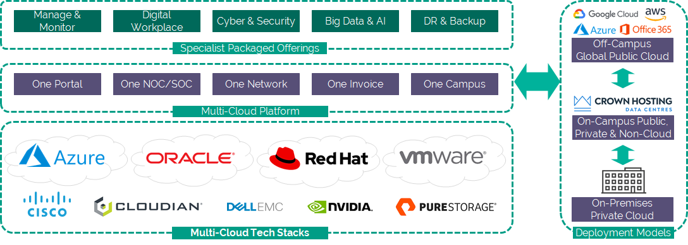

VMware Licence Service Service Definition
What is the VMware Licence Service?
The VMware Licence Service (VLS) is an innovative licensing model designed with VMware to make it easier to modernise your existing VMware environments as you migrate to the cloud. VLS enables you to exchange the fixed cost of your ongoing VMware Support and Subscription (SnS) Service for existing perpetual VMware licences with a VMware Cloud Provider Programme (VCPP) consumption-based licence provided by UKCloud.
This ideally suits customers who:
Want to migrate to a full rental/consumption-based OPEX model rather than a fixed-cost (that is, CAPEX-centric) model on either an annual or monthly basis
Want to expand their VMware estate without the associated upfront capital expense
Are in the middle of cloud migration and are seeing a steady decrease in their on-premises requirements, and therefore seek a flexible licensing model rather than a more traditional three-year Enterprise License Agreement (ELA)
Want to benefit from UKCloud's partnership with VMware to switch to a viable, cost-effective and efficient model offered by VMware
What the service can help you achieve
Reduce costs. VLS calculates your VMware support costs on a different basis to standard fixed CPU licences by utilising UKCloud's bulk purchasing cost advantage, which typically delivers 15-25% cost reductions.
Financial efficiency. Choice of annual or monthly payments depending on your specific circumstances or organisation requirements, with incremental discounts delivered for annual payment.
Only pay for what you use. Your consumption is based on the output reporting of the VMware usage meter, which directly relates to your actual operational licences. No longer pay for licences sitting on shelves or on powered-off servers.
Scalability. VMware metered licensing is entirely flexible, so can scale up and down as your needs change.
Flexibility. An easier and more cost-effective method for adopting new VMware technologies, without committing to the purchase cost of perpetual licenses. Utilise enhanced features or capabilities with just a small monthly increase in consumption reporting.
Mix and match SnS with VLS. You can utilise both traditional SnS and VLS in the same environment so that existing support arrangements can continue, with new VLS licences layered on top.
Advantages of utilising UKCloud
VLS is a service delivered by UKCloud, a specialist VMware Cloud Verified Provider, headquartered in the UK and dedicated to serving public sector organisations with over eight years' experience in providing and supporting VMware cloud workloads.
UK-based, award-winning service desk, manned 24/7 by vetted and security-cleared experts.
Every UKCloud customer has a designated Service Delivery Manager regardless of usage or number of workloads.
Migration to multi-cloud (a mix of true public cloud and secure private cloud spanning on-premises, Crown Campus and hyperscaler) becomes cheaper, faster and safer with UKCloud's portfolio of Cloud Services, Professional Services and Managed Services.
Fixed-price or metered service available.
Licence eligibility
Includes:
vROps, vSAN, NSX, SRM, Workstation
All licences that are captured in the usage meter
Excludes:
- WSP1, Avi Networks, Velocloud, Carbon Black, Pivotal (until these appear on the VCPP product guide)
What's involved?
To administer VLS, three changes are required to the existing VMware environment:
New licence keys must be 'injected' into all VMware products covered under VLS, as these keys represent the new consumption-based service arrangement. This is a very simple activity that can be done by the customer or UKCloud. As part of the onboarding the customer will ensure that all elements of the environment are on a supported version of VMware software.
The VMware metering tool will be deployed as this delivers accurate consumption / utilisation that enables variable costs to be compared against the pre-agreed fixed cost.
- The customer is responsible for providing the usage reports to UKCloud within the first five working days of each month. Failure to do so is a breach of contract and costs will be estimated.
Customers will be supported by UKCloud's experienced technical services team and will receive the same level of support as they would directly from VMware. Any remediation of the customer environment will be performed by the customer.
What's included?
The service is designed to be flexible and comes with our standard onboarding:
Creation of a UKCloud Portal account. Enabling you to access our ticketing system and notifications centre.
UKCloud licensing keys. We will create and distribute unique VMware licence keys for you to use with this service for the relevant software.
Knowledge Centre. Access to our extensive library of articles to assist you in using VMware on a self-service basis.
Support services. UKCloud becomes the authorised 24/7 service desk for VMware support and provides first and second-line support for the VMware products within the environment, and will manage escalations for third-line support via the VMware engineering team as appropriate. All tickets are prioritised and full details are available in our Knowledge Centre.
Additional, optional services are available, including the following:
Enhanced onboarding. UKCloud can install and configure the VMware Usage Meter and replace existing perpetual licence keys with VCPP licence keys across all applicable VMware products within the environment.
Monitoring and management service. UKCloud can remotely monitor the VMware products within the environment, alert you of any incidents if appropriate and provide a high level of engagement appropriate with the level of managed services. This may include patching, capacity management, performance management or supporting non-VMware products (Storage Array, Physical Network).
Transition services. UKCloud can provide specialist Professional Services to help you assess your environment, create an actionable cloud strategy and migrate workloads to the UKCloud multi-cloud environment. UKCloud can also provide expert services to help you adopt cloud-native approaches such as DevOps, automation, and containerisation.
Pricing and packaging
VLS starts at 43p per point per month for academia. Full pricing is available in the VMware Licence Service Service Scope.
Accreditation and information assurance
The security of our platform is our number one priority. We've always been committed to adhering to exacting standards, frameworks and best practice. Everything we do is subject to regular independent validation by government accreditors, sector auditors and management system assessors. Details are available on the UKCloud website.
Connectivity options
UKCloud provides one of the best-connected cloud platforms for the UK Public Sector. We enable access to our secure platform by DDoS-protected internet, PSN, Janet, HSCN and RLI and your own leased lines via our HybridConnect or CrownConnect services. The full range of flexible connectivity options is detailed in the UKCloud Pricing Guide.
An SLA you can trust
We understand that enterprise workloads need a dependable service that underpins the reliability of the application to users and other systems, which is why we offer one of the best SLAs on G-Cloud. For full details on the service SLA, including measurements and service credits, see the SLA Definition article on the UKCloud Knowledge Centre.
The small print
For full terms and conditions, including onboarding and responsibilities, refer to the Terms and Conditions documents.
For full information regarding this product, we have relevant articles on our Knowledge Centre.
Why UKCloud?
UKCloud is dedicated to the digital transformation of our nation's public services through our flexible, secure and cost-effective multi-cloud platform and the expertise of our people and partners. We believe that diversity of technology drives value and innovation and so we bring together different cloud technologies, with different deployment models spanning onpremises (private cloud), on-campus (Government's Crown Campus) and off-campus global public cloud services. This enables you to choose the right cloud for creating new workloads or migrating or replacing existing applications to the cloud with specialist SaaS solutions.

We recognise the importance of public services to UK citizens and businesses, which is why we include the highest level of support to all our customers at no extra cost. This includes dedicated 24/7 UK support, a Network Operations Centre (NOC), utilising protective and proactive monitoring tools, and access to UKCloud's experts. UKCloud can also provide outcome-based professional services or managed services to help you with digital transformation.
Feedback
If you find a problem with this article, click Improve this Doc to make the change yourself or raise an issue in GitHub. If you have an idea for how we could improve any of our services, send an email to feedback@ukcloud.com.